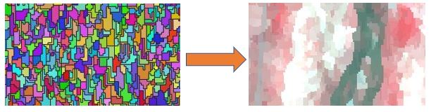

Rasterize: How to create multiband raster from vector attributes using python
Raster and vector data are the two primary types of geospatial data. While rasters store data as gridded values that are rendered as pixels on a map, vector data stores assigned attributes of specific features represented as points, lines and polygons.
In geospatial data processing workflows, converting between these two data types is a common practice for several reasons. This can either be just for the purpose of visualizing the data or for incorporation into analysis schemes among others.
This blog post focuses on the conversion of vector to raster data (a.k.a rasterizing), particularly the challenge of creating a multiband raster from multiple vector attributes, and introduces a python-based approach for overcoming this bottleneck.
In simple terms, rasterizing vector data simply means burning the data stored in a given vector attribute into an empty raster layer of defined extent and pixel size. But what is the deal with creating multiband raster from multiple vector attributes?... Well, the implementation of the rasterize function in conventional GIS softwares (e.g. QGIS and ArcGIS) only outputs a single band raster at a time. This means that the process allows burning one vector attribute into a corresponding single band raster. At best, one can use batch processing or use model builder in case they are interested in burning multiple attributes into multiple single band rasters and then merging them into a multiband raster. But what if there are 100s or more attributes? That will be laborious and inefficient. This is where the power of python scripting comes in. In this example I share a case of converting the output from image segmentation (polygons with 92 feature attributes) into a multiband raster for further classification. Read on...

First, we need to import the required modules. Here, gdal and numpy are required for handling raster data in its original state (.tif) and when they are rendered as numpy arrays respectively, ogr is required for handling vector data and tempfile for temporary file management ( i.e. we will save some files initially as a temporary file).
import gdal
import ogr
import numpy as np
import tempfile
Next, we need to create some base fuctions on which the whole process will run. To summarize what we want to achieve: (i) Each vector attribute will be burned into a single band raster. The extent, resolution and projection of each raster will be sourced from a reference image. In this case, the original image used for segmentation; (ii) Each raster will then be converted into a 3-D numpy array (i.e. rows, colums, bands) and subsequently concatenated into a multiband image array; (iii) Lastly, the multiband image array will be converted into .tif raster and then written to file.
def rasterize(ref_raster, shp, attrib_name):
# open reference raster and fetch resolution, projection and extent
raster_ds = gdal.Open(ref_raster)
ncol = raster_ds.RasterXSize
nrow = raster_ds.RasterYSize
proj = raster_ds.GetProjectionRef()
ext = raster_ds.GetGeoTransform()
raster_ds = None
# create empty raster (.tif) as temporary file and set its projection and extent to
# that of the reference raster
temp_out = tempfile.NamedTemporaryFile(suffix='.tif').name
memory_driver = gdal.GetDriverByName('GTiff')
out_raster_ds = memory_driver.Create(temp_out, ncol, nrow, 1, gdal.GDT_Byte)
out_raster_ds.SetProjection(proj)
out_raster_ds.SetGeoTransform(ext)
# open shapefile vector layer to retrieve and burn attribute into the empty raster
mb_v = ogr.Open(shp)
mb_1 = mb_v.GetLayer()
gdal.RasterizeLayer(out_raster_ds, [1], mb_1, options=["ATTRIBUTE="+attrib_name])
return temp_out
Department of Geography and Geology, Edge Hill University, United Kingdom.
Thesis: Monitoring spatio-temporal dynamics of grazing lawns in southern African savannahs using very-high-resolution satellite imagery. | Supervisor: Prof. Paul Aplin.